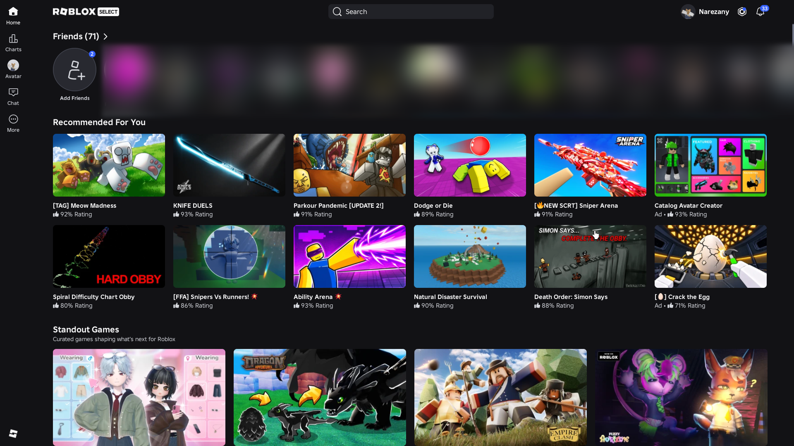

Roblox on Linux.
The macOS Roblox client, running on your Linux desktop through Darling.
- actually functional
- basic functionality
- fastflags, mods, and more
- roblox studio runs on wine itself
Roblox
screenshots

install
guideRun this in your terminal. The installer guides you through setup and prepares Roblox.
curl -fsSL https://raw.githubusercontent.com/nenquen/MacNCheese/main/install.sh | bashRun the installer again to update. Your settings and sign-in stay in place. The Flatpak is a testing build without Studio.
help
release notesWhat do I need?
An x86_64 Linux desktop with working graphics drivers. The source installer supports Arch and its relatives, Ubuntu 24.04+, Debian 13, and Linux Mint 22. Fedora needs Darling built from source.
What’s still broken
Theres still bugs, but Pull Requests are recommended and help out a lot! What we need so far is full vulkan (we are depending on zink at the moment), Native Wayland.